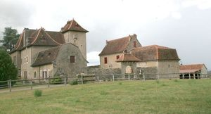
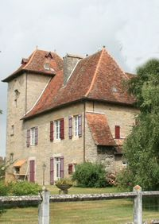
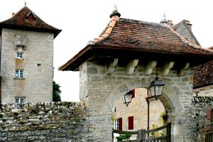
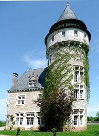
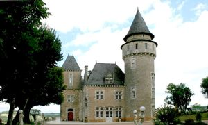
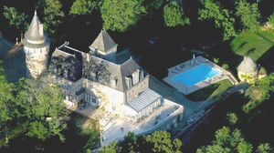
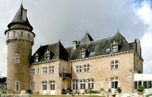
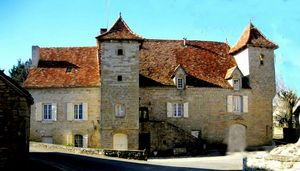

Recensement Jean-Claude Truffet
| Département | 46 — Lot |
| Canton | Gramat |
| Commune | Rignac |
| Type d'édifice | Château |
| Période d'origine | XV-XVI |








Deux châteaux à Rignac celui de Mordesson, de Roumégouse et la maison aux deux tourelles MORDESSON, a été construit par Guarin de Castelnau, seigneur de Gramat, pour en faire une résidence d'été. Il en est question lors de la guerre de cent ans dans la légende concernant le saut de la Pucelle. Les Valon de Thégra en ont été propriétaires pendant plusieurs siècles et l'abbé de Fouilhac y serait né en 1622, descendant par sa mère des de Valon. Il a fait édifier le château actuel, qui fut détruit en partie par un incendie en 1944. La table de dîme, abritée par les pilliers d'un pigeonnier, servait sous l'ancien régime, a déposer les redevances que devaient les paysans au seigneur. En 1949, le château appartenait à M. Ruscassié. Aujoùrd'hui, séparé de sa ferme, le château de Mordesson ces dernières années a souvent changé de propriétaires. ROUMEGOUSE La baronnie de Gramat aurait cédé le château au chapitre de Cahors en 987; ce devait être un poste avancé des barons de Gramat. Ensuite, il devint une dépendance de la maison de Castelnau. Après la féodalité, il passa dans les mains de plusieurs propriétaires dont les de Delfour au XVIe siècle et par la suite aux Chorrigny de Roc Amadour qui deviennent seigneurs de Roumégouse. Raymond de Fouilhac, baron de Gramat, est donataire universel de ce seigneur en 1732: le revenu du domaine lui avait déjà été donné en 1723, c'est pour éponger des dettes que le seigneur Chorrigny de Roumégouse fait ces donations à son suzerain alors qu'il avait des neveux. Les de Foutlhac sont propriétaires et seigneurs de Roumégouse en 1790. C'est M. Pisier qui fit construire la tour ronde et qui a donné un nouveau cachet au château. Encore aujourd'hui, ce châtelain a laissé le souvenir d'un homme très bon. Hôtellerie des Relais et châteaux. . Il accueillit ainsi en 1970 le général de Gaulle.
Mordesson, l'ensemble dans un parc quadrangulaire, le logis principal de plan en équerre avec tour rectangulaire donnant sur cour face à des dépendances toit en croupe prolongé par un bâtiment à toit brisé à deux pans, les deux dépendances toit à deux pans dont un brisés. Roumégouse dominant le village de Rignac, le château de Roumégouse vers 1900, l'édifice fut transformé selon le goût romantique de l'époque. De fausses accolades de pierre furent ajoutées sur les linteaux des baies, de façon à rendre les originales plus perceptibles. Rignac maison aux deux tourelles La base de cette demeure est contemporaine de la reconstruction de l'église, après la guerre de Cent Ans. L'édifice ne devait pas être assez spacieux, puisqu'il fut modifié et agrandi avant 1762. Il reçut alors en façade deux tourelles de section carrée, chacune sur un léger encorbellement. L'ensemble fut enfin restauré au XIXe siècle.
Famille de Guarin de Castelnau, Famille de Chorigny
"
Château de Mordesson gravure 1 à 3, Roumégouse de 4 à 7 et la maison à deux tourelles Gravure 8 à Rignac